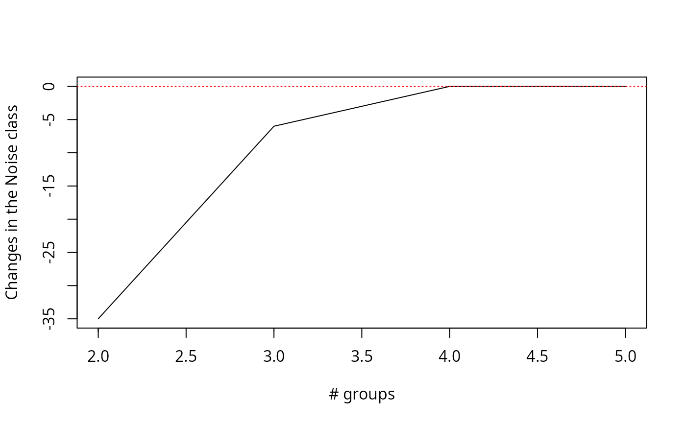

Plots clustering results
plot.mvegclust.RdCreate plots used to study vegclust clustering results for an increasing number of clusters
Usage
# S3 method for class 'mvegclust'
plot(x, type="hnc", excludeFixed=TRUE, verbose=FALSE, ylim=NULL,
xlab=NULL, ylab=NULL, maxvar=0.6, minsize=20,...)Arguments
- x
An object returned from functions
hier.vegclustorrandom.vegclust.- type
A string indicating the type of plot desired. Current accepted values are "hnc","hmemb","var","hcs" and "valid".
- excludeFixed
A flag to indicate whether clusters with fixed centroids should be excluded from plots.
- verbose
A flag to print extra information.
- ylim
A vector with the limits for the y axis.
- xlab
String label for the x axis.
- ylab
String label for the y axis.
- maxvar
Maximum cluster variance allowed for the
type="valid"plot.- minsize
Minimum cluster size allowed for the
type="valid"plot.- ...
Additional plotting parameters.
Examples
## Loads data
data(wetland)
## This equals the chord transformation
## (see also \code{\link{decostand}} in package 'vegan')
wetland.chord = as.data.frame(sweep(as.matrix(wetland), 1,
sqrt(rowSums(as.matrix(wetland)^2)), "/"))
## Create noise clustering from hierarchical clustering at different number of clusters
wetland.hc = hclust(dist(wetland.chord),method="ward")
#> The "ward" method has been renamed to "ward.D"; note new "ward.D2"
wetland.nc = hier.vegclust(wetland.chord, wetland.hc, cmin=2, cmax=5, m = 1.2,
dnoise=0.75, method="NC")
#> PROCESSING 2 MOBILE CLUSTERS
#> PROCESSING 3 MOBILE CLUSTERS
#> PROCESSING 4 MOBILE CLUSTERS
#> PROCESSING 5 MOBILE CLUSTERS
## Plot changes in the number of objects falling into the noise cluster
plot(wetland.nc, type="hnc")

## Plots the number of objects falling into "true" clusters,
## the number of objects considered intermediate,
## and the number of objects falling into the noise
plot(wetland.nc, type="hmemb")
## Plot minimum, maximum and average cluster size
plot(wetland.nc, type="hcs")
## Plot minimum, maximum and average cluster variance
plot(wetland.nc, type="var")
## Plot number of groups with high variance, low membership or both
plot(wetland.nc, type="valid")